BP神经网络学习算法可以说是目前最成功的神经网络学习算法。显示任务中使用神经网络时，大多数是使用BP算法进行训练。
在我看来BP神经网络就是一个”万能的模型+误差修正函数“，每次根据训练得到的结果与预想结果进行误差分析，进而修改权值和阈值，一步一步得到能输出和预想结果一致的模型。举一个例子：比如某厂商生产一种产品，投放到市场之后得到了消费者的反馈，根据消费者的反馈，厂商对产品进一步升级，优化，从而生产出让消费者更满意的产品。这就是BP神经网络的核心。
BP神经网络的概念
BP神经网络是一种多层的前馈神经网络，其主要的特点是：信号是前向传播的，而误差是反向传播的。具体来说，对于如下的只含一个隐层的神经网络模型：
BP神经网络的过程主要分为两个阶段，第一阶段是信号的前向传播，从输入层经过隐含层，最后到达输出层；第二阶段是误差的反向传播，从输出层到隐含层，最后到输入层，依次调节隐含层到输出层的权重和偏置，输入层到隐含层的权重和偏置。
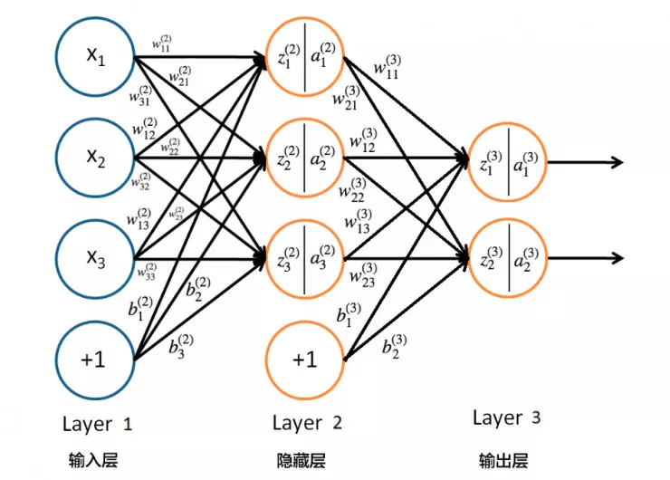
BP神经网络流程
神经网络的基本组成单元是神经元。神经元的通用模型如图所示，其中常用的激活函数有阈值函数、sigmoid函数和双曲正切函数。
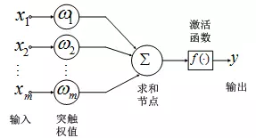
神经元的输出为：
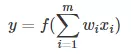
神经网络是将多个神经元按一定规则联结在一起而形成的网络，如图 所示。
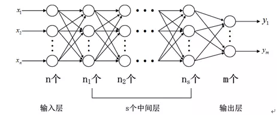
从上图可以看出，一个神经网络包括输入层、隐含层（中间层）和输出层。输入层神经元个数与输入数据的维数相同，输出层神经元个数与需要拟合的数据个数相同，隐含层神经元个数与层数就需要设计者自己根据一些规则和目标来设定。在深度学习出现之前，隐含层的层数通常为一层，即通常使用的神经网络是3层网络。
BP网络输入与输出关系
BP网络采用的传递函数是非线性变换函数——Sigmoid函数（又称S函数）。其特点是函数本身及其导数都是连续的，因而在处理上十分方便。为什么要选择这个函数，等下在介绍BP网络的学习算法的时候会进行进一步的介绍。S函数有单极性S型函数和双极性S型函数两种，单极性S型函数定义如下：f(x)=1/1+e−x
其函数曲线如图所示：
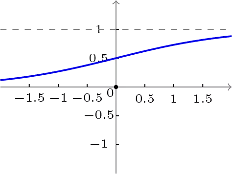
双极性S型函数：f(x)=1−e−x/1+e−x
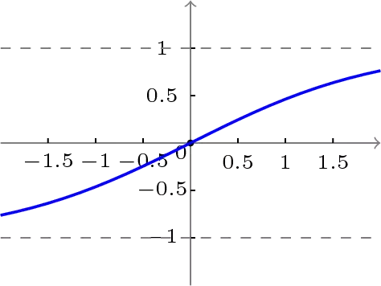
使用S型激活函数时，输入：
输出：
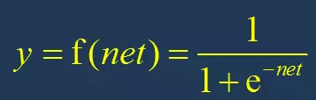
输出的导数：
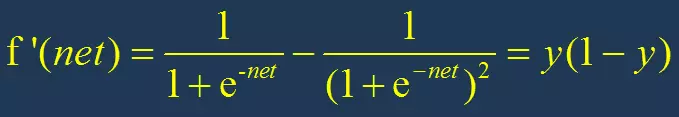
使用S型激活函数时，BP网络的输出及其导数图形：
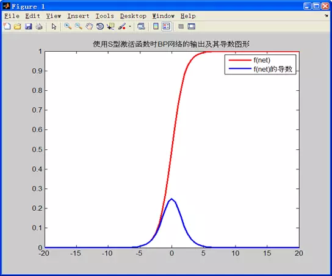
根据S激活函数的图形：
net在 -5~0 的时候导数的值为正，且导数的值逐渐增大，说明此时f(x)在逐渐变大 且 变大的速度越来越快net在 0~5 的时候导数的值为正，且导数的值逐渐减小，说明此时f(x)在逐渐变大 但是 变大的速度越来越慢对神经网络进行训练，我们应该尽量将net的值尽量控制在收敛比较快的范围内。
net在 0~5 的时候导数的值为正，且导数的值逐渐减小，说明此时f(x)在逐渐变大 但是 变大的速度越来越慢
对神经网络进行训练，我们应该尽量将net的值尽量控制在收敛比较快的范围内。
揭秘有监督的BP神经网络学习过程：
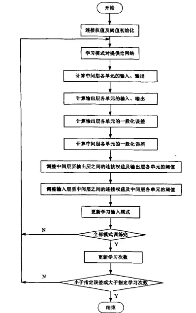


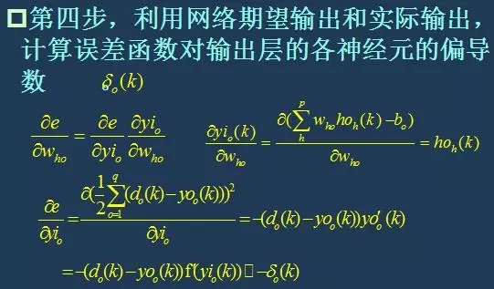
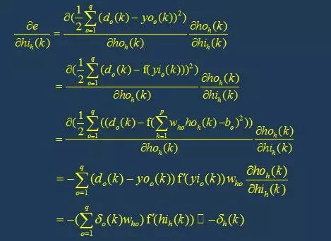

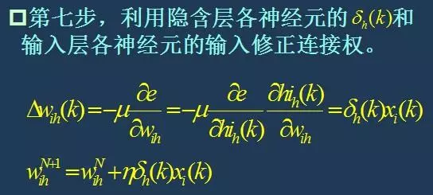
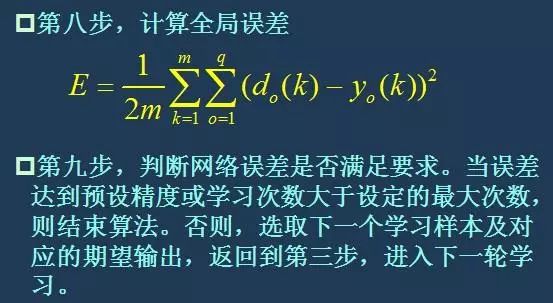
BP算法直观解释
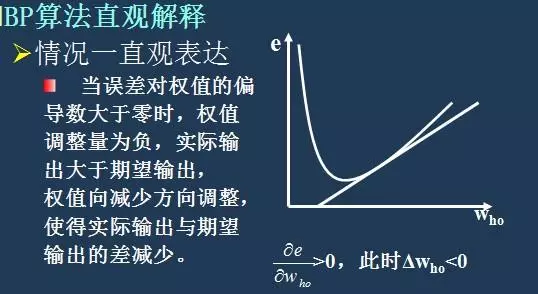
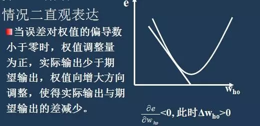
BP算法意味着什么
神经网络利用现有的数据找出输入与输出之间得权值关系（近似），然后利用这样的权值关系进行仿真，例如输入一组数据仿真出输出结果，当然你的输入要和训练时采用的数据集在一个范畴之内。例如预报天气：温度 湿度 气压等作为输入 天气情况作为输出利用历史得输入输出关系训练出神经网络，然后利用这样的神经网络输入今天的温度 湿度 气压等 得出即将得天气情况。同理，运用到自动化测试中，使用测试数据反映结果走向，bug数，质量问题等情况也可以做到提前预测的！
附录：
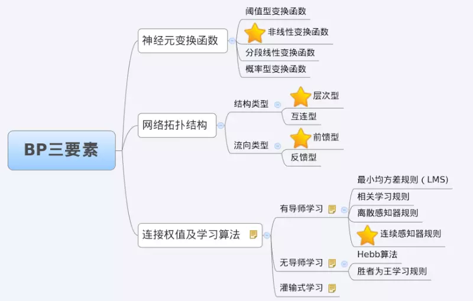